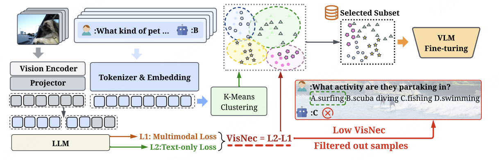

Estimate Visual Necessity
Compute the loss gap between multimodal and text-only inference for each instruction sample.

VisNec compares multimodal and text-only predictive losses to estimate whether a sample genuinely requires visual evidence, then combines the score with semantic clustering to preserve task diversity during selection.
The effectiveness of multimodal instruction tuning depends not only on dataset scale, but critically on whether training samples genuinely require visual reasoning. Existing instruction datasets often contain visually redundant samples that are solvable from text alone, as well as multimodally misaligned supervision that can degrade learning.
We propose VisNec, a principled data selection framework that measures the marginal contribution of visual input during instruction tuning. By comparing predictive loss with and without visual context, VisNec identifies whether a training instance is vision-critical, redundant, or misaligned. Combined with semantic clustering, VisNec selects compact, diverse, and visually necessary subsets for data-efficient multimodal instruction tuning.
Compute the loss gap between multimodal and text-only inference for each instruction sample.
Cluster semantic instructions and select high-necessity examples within each cluster.
Fine-tune VLMs with a top-15% VisNec subset instead of the full instruction dataset.
Compact subsets designed for data-efficient multimodal instruction tuning.
Separates vision-critical samples from text-solvable or mismatched supervision.
Balances high VisNec scores with broad task coverage across instruction types.
llava_v1.5-7b-top15.jsonllava_v1.5-7b-top15_vf.jsonllava_v1.5-7b-top15_k20-lora/llava_v1.5-7b-top15_vf-lora/If you find VisNec useful in your research, please cite:
@misc{dong2026visnecmeasuringleveragingvisual,
title={VisNec: Measuring and Leveraging Visual Necessity for Multimodal Instruction Tuning},
author={Mingkang Dong and Hongyi Cai and Jie Li and Sifan Zhou and Bin Ren and Kunyu Peng and Yuqian Fu},
year={2026},
eprint={2603.01195},
archivePrefix={arXiv},
primaryClass={cs.CV},
url={https://arxiv.org/abs/2603.01195},
}